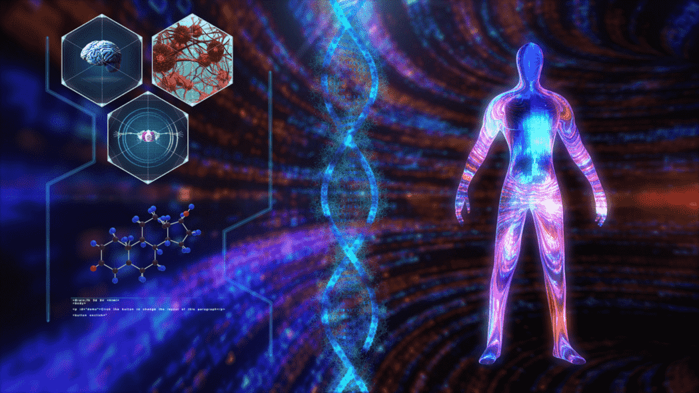

Where learning becomes fun
The body
Step into our fascinating interactive area that explores the wonders of the human body. This unique space combines interactivity, holographic explanations, and immersive learning to provide an unforgettable experience for both adults and kids.
Discover the intricacies of the human body as holographic displays showcase detailed explanations of its various systems and functions. Through interactive exhibits, visitors can explore the skeletal, muscular, circulatory, and nervous systems, gaining a deeper understanding of how our bodies work.
Engage in hands-on activities that allow you to examine models, manipulate virtual organs, and participate in interactive demonstrations. Feel the pulse of the circulatory system, witness the power of muscle movement, and understand the complexity of the nervous system in a truly immersive and interactive way.
This area is designed to captivate and educate visitors of all ages. Whether you're an adult seeking to deepen your knowledge or a young learner with a thirst for discovery, our interactive displays and engaging content provide a comprehensive learning experience.
Immerse yourself in the marvels of the human body as you learn about its intricate systems, functions, and the incredible way they work together to sustain life. This interactive area is a testament to the beauty and complexity of the human body, inviting you to explore and appreciate the incredible machine within us all.